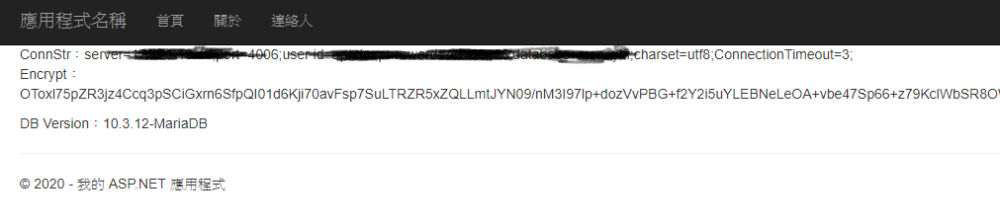
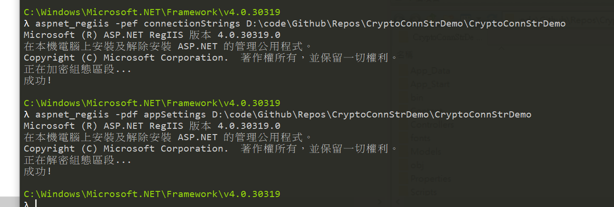

通常網站都會與資料庫溝通，也因此在 csharp 的專案設定檔，我們大都會將連線字串寫在這裡，便於程式調用，但資料庫連線字串包含了帳號密碼，直接寫在設定組態檔是一個資安漏洞
為了不要讓明碼直接暴露出去，我們這裡最好做一些防護措施，利用演算法將明文加密，等到要用的時候再解密出來。
當然這樣的做法還是有風險的，因為加解密的 Key、IV 也還是一樣都放在組態檔內，所以這只能說是一個初步的防護方式
連線字串加密
先透過一組金鑰 (public key, private key)來作加密、解密，有興趣的可以透過Online RSA Encryption, Decryption And Key Generator Tool來測試一下
需要先將需要保護的連線字串加密，然後將這個加密過後的字串，放到web.config裡面，等到程式需要資料庫連線的時候，取得加密字串後再針對他進行解密即可，搭配上 web.config 的連線字串lockItem設定使用。思路已經有了，所以具體的步驟大概就是要做
- Key、IV
- 加解密函式
- 判斷是否需要執行解密
Key、IV
這邊直接使用網路上的範例，相關知識可以參考一下這兩篇文章
- Day14 資料使用安全(保護連接字串)上
- 資料的加密與解密(1)-對稱金鑰加密演算法
config 設定
1
2
3
4
5
| <?xml version="1.0" encoding="utf-8"?>
<appSettings>
<add key="hashKey" value="金鑰喔金鑰喔金鑰喔金鑰喔"/>
<add key="iv" value="加密向量初始資料"/>
</appSettings>
|
加解密函式
1
2
3
4
5
6
7
8
9
10
11
12
13
14
15
16
17
18
19
20
21
22
23
24
| public string Decryption(string CipherText,string hashKey,string iv)
{
using (Aes aesAlg = Aes.Create())
{
aesAlg.Key = Encoding.Unicode.GetBytes(hashKey);
aesAlg.IV = Encoding.Unicode.GetBytes(iv);
ICryptoTransform decrypt = aesAlg.CreateDecryptor(aesAlg.Key, aesAlg.IV);
byte[] decrypted = decrypt.TransformFinalBlock(Convert.FromBase64String(CipherText), 0, Convert.FromBase64String(CipherText).Length);
return Encoding.Unicode.GetString(decrypted);
}
}
public string Encryption(string PlainText,string hashKey, string iv)
{
using (Aes aesAlg = Aes.Create())
{
aesAlg.Key = Encoding.Unicode.GetBytes(hashKey);
aesAlg.IV = Encoding.Unicode.GetBytes(iv);
ICryptoTransform encrypt = aesAlg.CreateEncryptor(aesAlg.Key, aesAlg.IV);
byte[] encrypted = encrypt.TransformFinalBlock(Encoding.Unicode.GetBytes(PlainText), 0,
Encoding.Unicode.GetBytes(PlainText).Length);
return Convert.ToBase64String(encrypted);
}
}
|
判斷是否需要執行解密
直接取得連線字串的 function 當中判斷處理
1
2
3
4
5
6
7
8
9
10
11
12
13
14
15
16
17
18
19
20
21
22
| private string GetVersion()
{
var connectionString = GetConnectionString("db");
var commandText = "select @@version";
using (var cnn = new MySqlConnection(connectionString))
{
return cnn.Query<string>(commandText).FirstOrDefault();
}
}
public string GetConnectionString(string name)
{
var connectionString = ConfigurationManager.ConnectionStrings[name];
var source = connectionString.ConnectionString;
if (connectionString.LockItem)
{
var hashKey = ConfigurationManager.AppSettings["hashKey"];
var iv = ConfigurationManager.AppSettings["iv"];
source = Decryption(source, hashKey, iv);
}
return source;
}
|
Sample Code

Github組態檔案加密
透過 aspnet_regiis.exe 來處理，需要透過管理員權限來執行喔
1
2
3
4
5
| # 透過 aspnet_regiis將 指定目錄下的 web.config 當中的 appSettings 區段加密
aspnet_regiis -pef appSettings D:\code\Github\Repos\CryptoConnStrDemo\CryptoConnStrDemo
# 同上，參數改為 pdf 則為解密
aspnet_regiis -pdf appSettings D:\code\Github\Repos\CryptoConnStrDemo\CryptoConnStrDemo
|

如果要在本機測試的話，需要先將 Visual Studio 在建置的時候使用 local 的 IIS，而非 IISExpress
如果需要將本機的 RSA 金鑰容器給別台主機使用，則需要先將金鑰容器匯出，再由別的主機匯入使用
1
2
3
4
| # 匯出
aspnet_regiis -px "NetFrameworkConfigurationKey" D:/RSAkeys.xml -pri
# 匯入
aspnet_regiis -pi "NetFrameworkConfigurationKey" D:/RSAkeys.xml
|
參考資料
- 配置檔案（Web.Config）加密解密詳細說明
- Day15 資料使用安全(保護連接字串)下
- ASP.NET 使用相同 RSA 金鑰容器幫 web.config 連線字串加密